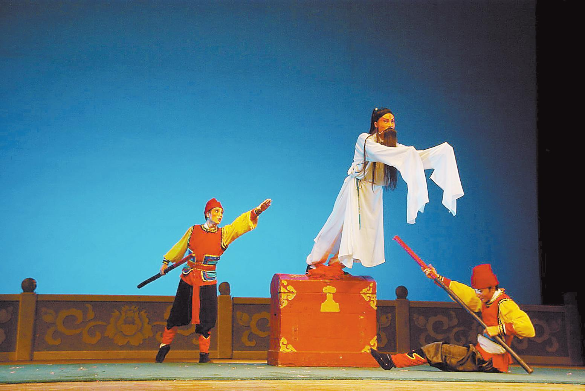

古老桂剧青春传承
桂剧是广西地方戏曲剧种中最为成熟的剧种之一，深受广西人民喜爱，曾经出现过演出时万人空巷的壮观场面。可是，由于种种原因，桂剧和许多地方剧种一样，传承与发展中遇到严峻挑战。11月10日，正值全国上下深入贯彻落实党的十七届六中全会精神之际，由广西文联主办、广西戏剧家协会承办的"2011中国桂剧艺术论坛"在南宁举行，来自广西戏剧界、文艺理论界的50余位专家、学者以及广西各高校的20余名大学生戏剧社团负责人齐聚一堂，共同为桂剧艺术的传承与发展献计献策。
促发展 人才培养是关键
桂剧是广西人民喜闻乐见的地方戏曲剧种之一，被列入首批国家级非物质文化遗产名录。它扎根于民间，融汇了广西特有的风土民情和人文特点，逐渐形成了细腻婉约、灵秀生动、刚柔并济、富有乡土气息的风格特色，具有贴近生活的质朴简约之美。在上世纪50年代桂剧的黄金时期，桂剧名列全国十大地方剧种，辉煌一时。改革开放30年来，桂剧一直在进行自我发展的探索和实践，并取得了丰硕成果，《泥马泪》《瑶妃传奇》《烈火难关》《漓江燕》《柳宗元》《大儒还乡》等一大批艺术精品闪耀中国的戏剧舞台，可谓绚丽多彩，魅力四射。
可是，一方面是舞台精品频频获奖，一方面桂剧却不得不面对传统流失、人才断档、剧目和技艺失传、民间演出举步维艰、艺术特色日渐淡化的严峻局面。桂剧如何走出困难境地，重新焕发生命活力？与会人士各抒己见，慷慨陈词。
大家认为，桂剧人才的培养是目前需要大力开展的工作。桂剧的繁荣发展，关键在于人才的繁荣兴盛。如果再不注意接班人的储备，桂剧人才就会断层。桂剧是一门综合艺术，现在不仅缺乏表演人才，编剧、舞美、灯光、音响等各个行当的人才也是极为缺乏。
桂林市桂剧团团长、中国戏剧梅花奖得主张树萍讲了这样一件事：今年7月桂林市桂剧团招了一批学员，再不招就可能面临演员断代的危险，原定60个名额，结果只招了11个。她感叹道："原来自己少年学艺时选拔人才是三千人里挑一个，现在连百里挑一都谈不上。喜爱桂剧、愿意投身桂剧艺术的年轻人实在太少了！"
人才培养任重道远，更是当务之急。著名桂剧表演艺术家、国家级非物质文化遗产项目桂剧代表性传承人秦彩霞，希望年轻演员要刻苦锻炼技艺："唱要唱得像样，打要打得像样。观众是要看好看的艺术，观众不爱看了，讲来讲去还是自身的问题，打铁还要本身硬，年轻演员一定要勤学苦练，活儿做漂亮了，观众才爱看。"
桂剧老艺术家黎承信指出，现在的青年演员基本功不扎实，能挑大梁的不多，且行当不全，人才流失严重。他直言，待遇太低是造成人才流失的重要原因，只有提高待遇，才能留住人才。
桂剧表演艺术家曾定国指出，桂剧应该培养和宣传领军人物："粤剧有红线女，豫剧有常香玉。我们也要宣传我们的桂剧精英，宣传我们的后起之秀，让他们享誉全国。"
去年第四届广西青年演员大奖赛(戏曲、曲艺、话剧)决赛期间，本报记者曾采访自治区文化厅厅长余益中，他表示文化事业、文化产业要繁荣发展，必须依靠人才来推动。我们要加大力度培养广西本地文艺明星，对他们进行业务培训；同时，要尽快提高演员待遇，通过体制改革、政府投入，以及其他市场运作方式，逐步提高工资标准，改善住房条件。
由此可见，培养人才、爱护人才，已成为业界人士的共识。